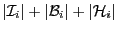

Next: get_global_rows Get
Up: Descriptor data structure
Previous: get_local_rows Get
Contents
nc = desc%get_local_cols()
- Type:
- Asynchronous.
- On Entry
-
- desc
- the communication descriptor.
Scope: local.
- On Return
-
- Function value
- The number of local cols, i.e. the number of
indices used by the current process, including both local and halo
indices; as explained in 1,
it is equal to
. The
returned value is specific to the calling process.